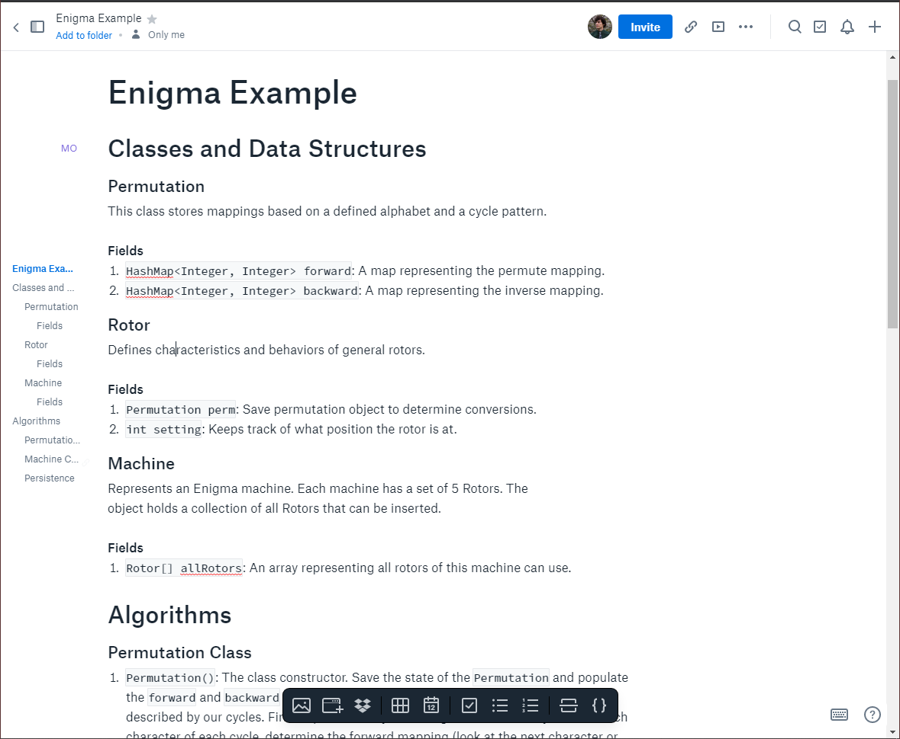
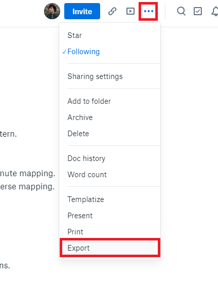
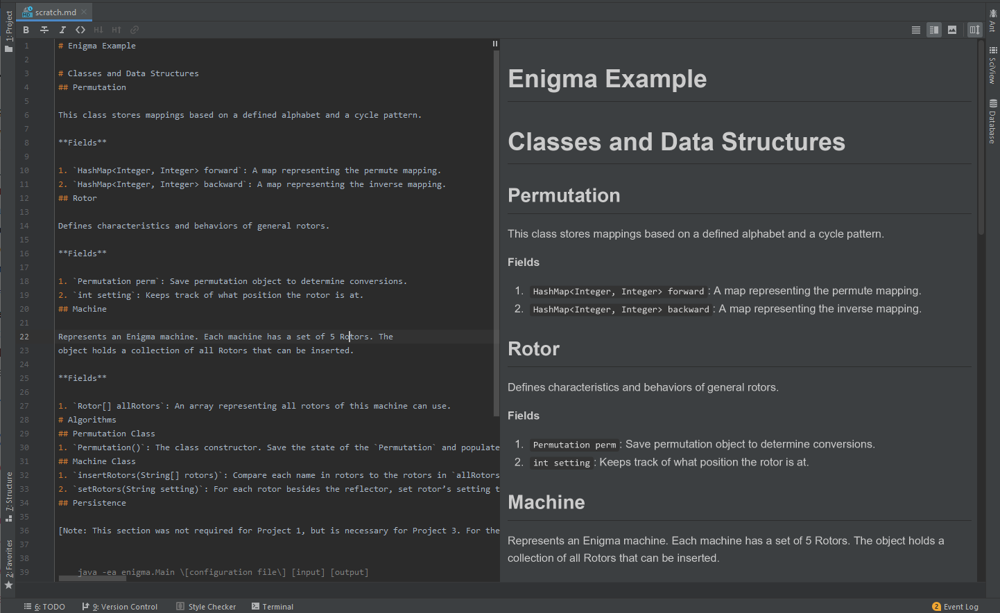

Due Date: Friday 4/17 11:59PM.
Navigation
- Before You Begin
- A. Programming Products
- B. Discussion: Information Hiding
- C. Designing for Change
- D. DRY
- E. Exercise: Gitlet Architecture
- F. Deliverables
Before You Begin
In this lab, we'll be exploring deeper into the art and practice of software engineering, which combines all of the ideas we've learned in the course to this point. For the most part, our discussion of design trade-offs in the course have mainly focused around smaller snippets of code. We learned algorithmic analysis to make arguments about the execution costs of a piece of code, and throughout the projects and other assignments you have probably noticed some of the programming costs incurred from the writing, improvement, and maintenance of a programming product. By the end of this lab you should have been introduced to some important concepts of software engineering. You are highly encouraged to work through this lab with a partner, and we have tried to incorporate a number of prompts for you to discuss things with your partner.
The core exercise in this lab will be writing a design document for Project 3: Gitlet. If you have not already, you should read through the Gitlet spec. You are not expected to know everything about the project before beginning this lab. However, without a solid understanding of the fundamentals of the project the assignment will be more challenging to execute and will likely be less useful to you. A great way to reinforce your understanding is to discuss any questions you have about the spec with your lab partner as you work through the design process. You may work through the design for Gitlet with your lab partner and even may have the same design document (however you will both have to submit individually). To be explicit, you will be able to work with a partner in order to come up with a design, but all code for the project must be written individually.
A. Programming Products
Designing a programming product is different from 'simple programming'.
Programming products often combine the work of many programmers: It's not always the case that programmers share a common understanding of every component of the program. Code that is written by one programmer may not be easily understood by another programmer, or even the original programmer themselves weeks or months down the line. Working in teams imposes real stress that is not evident from working alone.
Programming products are prepared for use by other people: Unlike software that is written by programmers, for programmers, or purely 'academic' problems which might not be used in a real world setting, programming products need to meet the requirements of the client or target user. Unfortunately, clients and users rarely, if ever, completely understand what their programming product should do; instead, they often have a vague notion of a problem. Part of the challenge of software engineering is in acquiring a deep-enough mental model of the fundamental problem the client is facing in order to choose between multiple possible solutions.
In short, software engineering is concerned with the problem of "multi-person development of multi-version programs".
B. Discussion: Information Hiding
Software doesn't exist in a vacuum. In the real world, software constantly undergoes changes in requirements in response to shifts in requirements.
There are two, quite distinct, types of software aging. The first is caused by the failure of the product’s owners to modify it to meet changing needs; the second is the result of the changes that are made. This "one-two punch" can lead to rapid decline in the value of a software product.
Read Revealing the Secrets of David Parnas.
Work with your partner to come up with a shared definition for information hiding as it is used in the excerpt below. Then, come up with a couple examples of instances where we've used the principle of information hiding in this course.
Parnas uses information hiding to decompose the system in modules that satisfy his goals; each module keeps its own secret design decision about some aspect of the system (e.g., choice of a data structure). A module's design decision can change but none of the other modules should be affected.
Consider the following claim from the paper.
[Parnas] defines the "interface between programs" to consist "of the set of assumptions that each programmer needs to make about the other program in order to demonstrate the correctness of his own program." In addition to an operation signature, these assumptions must specify the restrictions on data passed to the operation, the effect of the operation, and exceptions to the normal processing that may arise.
How can information hiding affect the number of assumptions a programmer needs to make? How is testing related to the assumptions that come with designing a particular program method?
One aspect of information hiding is encapsulation, an idea we've already explored several times in the course. Can you think of other examples outside of encapsulation where the hiding information from the programmer has been helpful or desirable?
A secret of a well-designed module is more than hidden data. It is any aspect that can change as the system evolves: processing algorithms used, hardware devices accessed, other modules present, and specific functional requirements supported.
In what ways has technology changed in the past 5 or 10 years? What kind of gadgets and software services have become popular in recent years? How can information hiding help software adapt to these changes?
C. Designing for Change
David Parnas also has written about designing for change. In multi-version programming we find three additional problems that are not present if we are going to write a single program:
- How to write programs that are easily modified. Programs in which a change of one design decision does not require changes in many parts of the program.
- How to write programs with useful subsets. If we only need a subset of the services performed by a program we should be able to quickly remove unneeded parts without having to rewrite the remainder. If we are unable to complete or use certain functions, we would like a reduced set of capabilities to be available.
- How to write programs that are easily extended. We should like to be able to add new capabilities to programs without rewriting the programs that are already present. This, too, is a fail soft goal; build a subset to meet a deadline, then extend as time permits.
Some key ideas that can help you create code are listed below:
Apply the following ideas to your design:
- Information hiding
- Abstraction
- Separation of concerns
- Data hiding
Begin by characterizing likely classes of changes:
- Do not begin with data structures
- Do not begin with algorithms
- Think about change as part of documenting requirements
- Changeability is a requirement and should be treated as such.
Estimate the probabilities of each type of change:
- We cannot make everything equally easy to change.
- Our intuition on what will change is often wrong, but we can consult clients as well as more experienced software engineers for feedback.
- Oftentimes, we won't know what will be more likely to change, but an educated guess is better than nothing.
- Review changeability at every step in the design.
Then, organize the software to confine or encapsulate likely changes:
- Provide an abstract interface that is unlikely to change.
- Implement objects that hide changeable data structures.
Experience has shown that, even if unanticipated changes are eventually required, software designed for ease of change is easier to maintain than software designed without concern for future changes.
D. DRY
When working on any software project, the principle of "Don't repeat yourself", or DRY, is one of the simplest but also most general principles for writing maintainable software. We've already seen several examples of this in action when we examined the Comparable, Comparator and Iterable, Iterator interfaces.
Each of these methods reduced our need to make near-copies of code throughout our program. For example, say we had several classes that represented animals and we wanted to implement some function that would take the maximum of two such animal objects. If we wanted to Before the introduction of Comparable, we would have needed to implement a different max function for each type of Animal: we'd need to write a maxDog function, a maxCat function, a maxPenguin function, a maxWhale function, etc., resulting in unnecessary repeated work and a lot of redundant code. By introducing the Comparable interface, we can instead implement one max function that uses each Animal's compareTo method.
In Java (and many other programming languages), our solution to improve code reuse is to extract repeated code snippets into methods or other subroutines. For each variable or value that differs between the code snippets, parameterize the variables, turning them into parameters that can be passed into the function by the caller.
DRY, as a design philosophy, is interesting because it takes the approach of write code first, then abstract it away second. Unlike upfront design where all the decisions are made at the start, pulling code out into a method can be done at the precise time when the abstraction is needed. But DRY is not incompatible with information hiding. The better way to formulate the problem may be to say that, if information hiding is responsible for managing the complexity of the high-level program architecture, DRY can be thought of as a technique to help programmers manage complexity as they implement each individual class.
There are many different approaches to how to go about practicing these DRY principals. One good approach is that the second time you write the same (or code that is similar enough that can be parameterized), you should create a new function or otherwise. This makes your code easier to maintain as the logic is only contained in one location. In general it should also lead to hopefully shorter and more cleanly written code.
E. Exercise: Gitlet Architecture
One key idea in designing architecture is to imagine you're inventing new "species" of creatures. Unlike living species, however, which are concerned with survival, your components are entities that have responsibilities for storing data and accomplishing computation of some kind. Inventing new species is a creative activity; you want to think about what they will and won't do, give them names, and tell stories about how they interact with each other, exchanging data.
---Amy Ko
For the remainder of the lab you are to work on the Gitlet Design Document. You will be required to submit your first draft of your design for this lab assignment. It is ok if you have not finalized all of the details by this submission, and it is important to remember that a design document should be a living document. If your design changes at any point, or if you do determine more details of your design, you should update the design document to reflect this.
Keeping an updated design document should keep you organized, but it will also allow us to be able to help you. In order for us to understand your implementation in a timely manner when we help you in office hours or via GitBugs, it is imperative that you keep a design document in your proj3 folder that reflects the current design of your program. We will not help you in office hours or process your GitBugs otherwise.
Again, before beginning you and your lab partner should take some time to first ensure that both of you have a reasonable understanding of the project. If you have not already, you should read or at the very least skim the spec here. What is the problem(s) that Gitlet aims to solve? How does Gitlet propose to solve that problem? What kind of mental models and representations are used as part of Gitlet?
You will be adding design doc to the proj3/gitlet/gitlet-design.md file. This means that you must have fetched and merged the project files before continuing. Again to do this please run the following commands:
git fetch shared
git merge shared/proj3 -m "get proj3 skeleton"Writing Your Design Doc
We are asking you to complete your design doc in markdown, a language that allows you to nicely format and style a text file. There are various ways that you can edit markdown (we will describe two options below). We again do not necessarily care that your file is perfectly formatted, but find that it can be nice to write design documents (or other files like this) in a more featured way (e.g. with bold text, code blocks / text, bullets, etc.). Some features that might be particularly useful for your design doc are the headers and the code / syntax highlighting (see the link above for how to do each of these)!
Don't spend too much time deciding how you want you want to work on the design doc, we care much more about the content than the formatting. The guidelines of your design document can be found here along with an example of a design document for Enigma. Remember that the purpose of this document you're writing is not just to satisfy the instructors. It's intended to help you organize, plan, and streamline your Gitlet implementation, so focus on writing a document that's useful to you.
Dropbox Paper

There are many ways that you can edit Markdown files that allow you to more easily visualize the formatted output. One of our favorite methods is Dropbox Paper, which renders the markdown live in the same window as the editor. One benefit of this is that both you and your partner can collaborate on the file remotely, which might make your workflow a bit smoother.
If you edit your file in Dropbox Paper, you will have to export the markdown and paste it into your proj3/gitlet/gitlet-design.md file which adds one extra step. To do this, see the screenshot below to see how. Make sure to select the "Markdown (.md)" option when given the choice.

If you do choose to use Dropbox Paper, again please remember to copy over your most recent version of your design document to the proj3/gitlet/gitlet-design.md file whenever you make significant changes. If you would like to submit Gitbugs, remember that you must have committed the updated version of your design doc, or your GitBug skipped. Additionally, please include a link to a viewable version in your design document, so we can access the rendered file.
IntelliJ Markdown

If you do not wish to make an account or learn how to use Dropbox Paper you can also just edit the markdown directly in IntelliJ. Open the proj3 folder as you would normally, then if you edit the gitlet-design.md file you should see the live rendering of the markdown appear in a different pane of the IDE.
F. Deliverables
The submission process for this assignment will be a bit different than other labs, so please follow the instructions carefully. To receive full credit for completing this lab, make sure that you:
- Double check that your design document fulfills all of the requirements specified in the design document guidelines
- Complete your design document and ensure that the markdown / text has been copied into the
proj3/gitlet/gitlet-design.mdfile. - Added and committed you
proj3/gitlet/gitlet-design.mdfile. If you have not already, fetch the files for Lab 13 (the only file distributed will be
partner.txt). To do this run the commands:git fetch shared git merge shared/lab13 -m "get lab13 skeleton"- Fill out the
lab13/partner.txtwith your partners information. If you did not complete this lab / your design document with a partner, just leave this blank. Copy your
proj3/gitlet/gitlet-design.mdinto the lab folder. This is only for submission purposes, and you will only need to maintain / update theproj3/gitlet/gitlet-design.mdfile. You can do this by running the following command from yourrepofolder:cp proj3/gitlet/gitlet-design.md lab13/gitlet-design.mdOnce this has been copied over, you can now submit the assignment in the same way you usually do.
git add lab13 # or equivalent add command git commit -m "submitting lab13" git tag lab13-x # x is the next highest submission number git push git push --tags
Grading
This assignment is not being manually graded for content, we will simply be doing a check for the length of your document. That being said, this is one of the most important things you can do in order to set yourself up for success on the project. Putting in effort to this assignment should lead to a cleaner implementation of Gitlet and designing before you code will almost certainly save you time. Additionally once again, if you do not have a sufficient design document, you will not be able to get help from course staff through office hours or GitBugs.
Acknowledgments
This lab was adapted by Matthew Owen from the CS61BL Summer 2018 Software Engineering lab written by Kevin Lin.